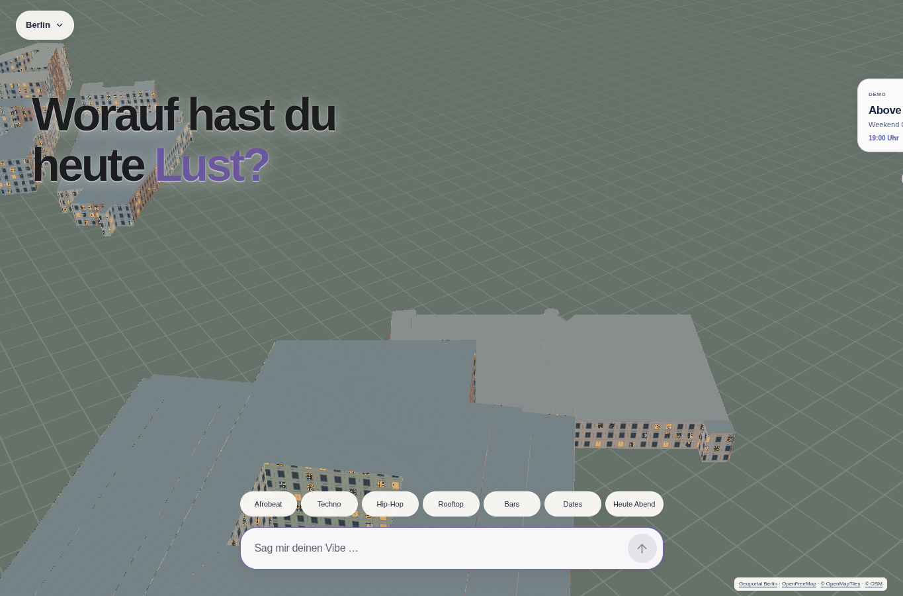
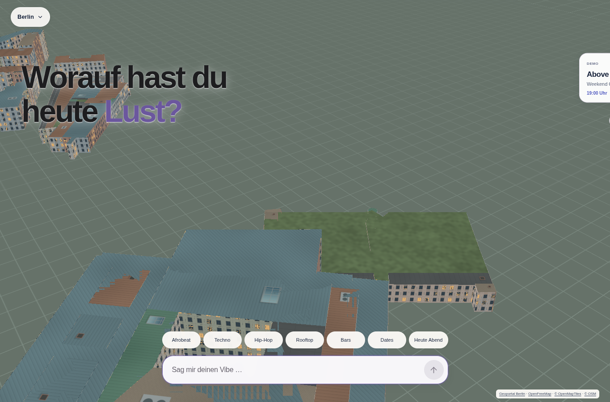
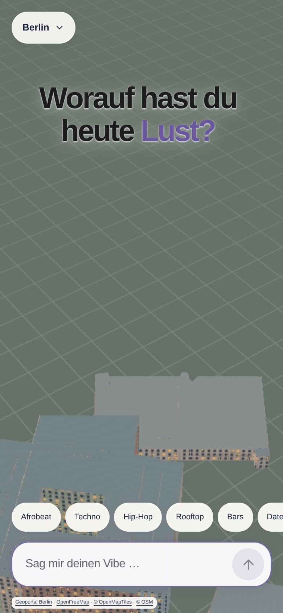
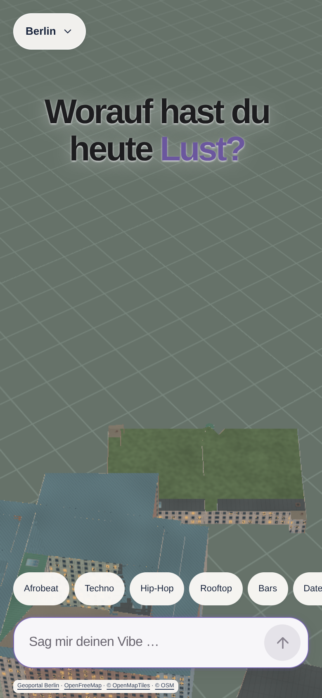

Berlin. Dach für Dach.
Phase 1 · Vorher / Nachher
Echte Browseraufnahmen der vollständigen Root-App: identische Berliner Gebäude, Höhen und Kamerapositionen. Die Dachflächen erhalten Materialvarianten, Fugen, Alterung und dezente Oberflächendetails.
Interaktive NOCT-Testapp öffnenSchräge Nahansicht




Zoom 17,6, Neigung 58°. Antippen öffnet die unveränderte Originalaufnahme zum Vergrößern. Dachdetails sind prozedurale Materialdarstellungen; sie verändern weder Gebäudesilhouette noch Dachhöhe.
Mobilansicht vergleichen · 390 × 844



